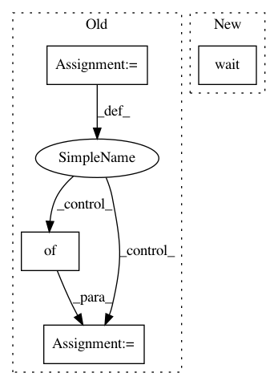

5615fee985fde2cef0b5a194fb6d2debd9486d5a,solutionbox/image_classification/mltoolbox/image/classification/_api.py,,batch_predict,#Any#Any#Any#Any#Any#,98
Before Change
return _local.Local.batch_predict(dataset, model_dir, output_csv, output_bq_table)
if not isinstance(cloud, dict):
cloud = {}
return _cloud.Cloud.batch_predict(dataset, model_dir, output_csv, output_bq_table, cloud)
After Change
until the job finishes, and it does not have a return value.
batch_predict_async(dataset, model_dir, output_csv, output_bq_table, cloud).wait()
In pattern: SUPERPATTERN
Frequency: 4
Non-data size: 4
Instances
Project Name: googledatalab/pydatalab
Commit Name: 5615fee985fde2cef0b5a194fb6d2debd9486d5a
Time: 2017-03-06
Author: qimingj@users.noreply.github.com
File Name: solutionbox/image_classification/mltoolbox/image/classification/_api.py
Class Name:
Method Name: batch_predict
Project Name: googledatalab/pydatalab
Commit Name: 5615fee985fde2cef0b5a194fb6d2debd9486d5a
Time: 2017-03-06
Author: qimingj@users.noreply.github.com
File Name: solutionbox/image_classification/mltoolbox/image/classification/_api.py
Class Name:
Method Name: preprocess
Project Name: ilastik/ilastik
Commit Name: aba96dc49c0a132eb6edc6505a69ad13e9a37e5d
Time: 2016-02-18
Author: janez.ales@iwr.uni-heidelberg.de
File Name: ilastik/applets/trackingFeatureExtraction/opTrackingFeatureExtraction.py
Class Name: OpTrackingFeatureExtraction
Method Name: execute
Project Name: ilastik/ilastik
Commit Name: 5aac7ca8dd64ac0bc1a4b74dafc1e45bc3f0034a
Time: 2016-02-18
Author: janez.ales@iwr.uni-heidelberg.de
File Name: ilastik/applets/trackingFeatureExtraction/opTrackingFeatureExtraction.py
Class Name: OpTrackingFeatureExtraction
Method Name: execute